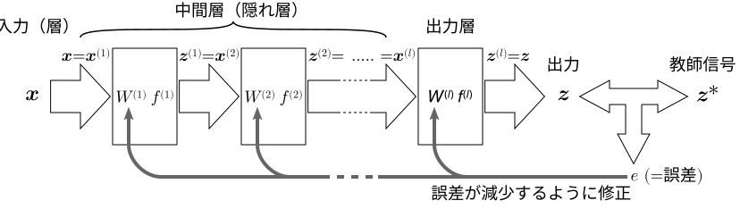
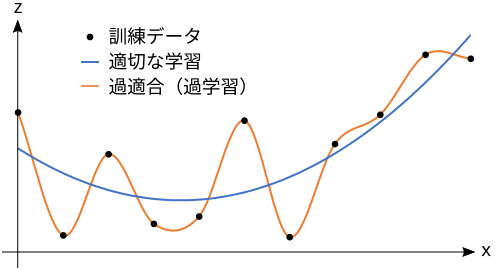

複数入力複数出力の「層」を直列に（1方向に接続したネットワーク）
出力の誤差が減少するように，隠れ層（中間層）も学習する手法．

誤差 を重み行列 （の各成分 ）の関数 と考える．
活性化関数 を可微分なもの（シグモイド関数，正規化線形関数 (ReLU) など）にすることにより，誤差関数 も可微分とする．
誤差関数 を，重み行列の各成分 について微分したときの偏微分係数 を求める．
なお，誤差関数 が可微分でない場合（例えば活性化関数がステップ関数の場合）， を多少変化させても，誤差 は変化しない．（あるしきい値を超えた瞬間に，不連続に変化する）
重み行列の各成分 の，学習における修正量 を，この偏微分係数に比例するように決定する．
なお，このアイデア自体は従来からあったが，各 に対する誤差関数 の偏微分係数 を求める効率的な手段がなかった．誤差逆伝播法は，この計算を効率よく行う手法である．
最急降下法において必要になる偏微分係数 は，（第 層の第 セルの活性値）と （第 層の 番目の入力）を用いて以下のように表せる（証明は省略．そういうもんだと思ってください）．
この は， （第 層の各セルの活性値）から計算できる．すなわち， が減少する方向（ から ）への漸化式[1]で計算できる．これが誤差「逆伝播」法という名称の由来．（これが誤差逆伝播法のキモ）
この漸化式を用いて出力層から入力方向へ向かって，効率よく を計算し，それらからさらに ， を計算して，最急降下法を用いる．

局所解問題
勾配消失問題
活性化関数の勾配が関連しているので…
入力に近い層は別の方法で学習する
過適合問題
学習をやめるタイミングを見計らって，適当なところで学習を打ち切る．
パラメータ（重み ）が多すぎる（FNNが柔軟すぎる）のが原因の1つなので…
タスクの性質に応じて，いくつかの層で，重みパラメータ を複数個所で共有するような規則的なネットワーク構成を用いて，実質的にパラメータを減らす．
ドロップアウト：学習の反復時，各層でユニットをランダムに選んで出力を強制的に 0 にする．(出力線を一時的に切断するのと等価)